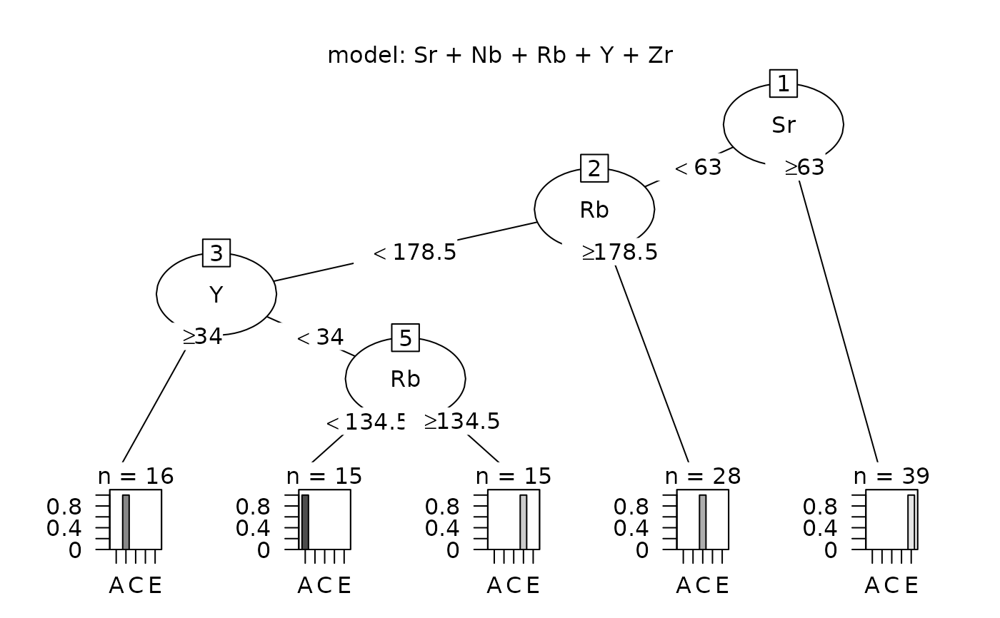

ps_tree
ps_tree.RdFit a recursive partitioning model (classification tree) to data from sources
Usage
ps_tree(
doc = "ps_tree",
data,
GroupVar,
Groups = "All",
AnalyticVars,
wts = NA,
Seed = 11111,
CpDigits = 3,
plotTree = TRUE,
plotCp = TRUE,
Model,
ModelTitle,
minSplit = 20,
cP = 0.01,
predictSources = TRUE,
predictUnknowns = FALSE,
unknownData,
ID = " ",
unknownID = " ",
folder = " "
)Arguments
- doc
A string with documentation added to defintion of usage, default is ps_tree (the function name)
- data
A data frame with the source data to be analyzed
- GroupVar
The name of the variable defining groups, grouping is required
- Groups
A vector of codes for groups to be used, 'All' (the default) if use all groups
- AnalyticVars
A vector with the names (character values) of the analytic variables
- wts
Option to weight the observations, if used, vector with length nrow(data); if NA (the default), assume equal weights
- Seed
A positive integer, to produce a reproducible analysis
- CpDigits
The number of significant digits to display in the Cp table, default value is 3
- plotTree
Logical. If TRUE (the default), plot the recursive partitioning tree
- plotCp
Logical. If TRUE (the default), plot the Cp table values
- Model
A character string containing the names of the variables (characters) considered separated by + signs
- ModelTitle
The parameter Model as a single character value
- minSplit
The minimum size of a group for splitting, default is 20 (the default in rpart())
- cP
The required improvement in Cp for a group to be split, default is .01 (the default in rpart())
- predictSources
Logical: if TRUE, use the tree to predict sources for the source data; default is TRUE
- predictUnknowns
Logical: if TRUE, use the tree to predict sources for observations in unknownData; default is FALSE
- unknownData
Data frame with data used to predict sources, must contain all variables in AnalyticVars
- ID
If not " " (the default), the name of a variable identifying a sample in data
- unknownID
If not " " (the default), the name of a variable identifying a sample in unknownData
- folder
The path to the folder in which data frames will be saved; default is " "
Value
The function returns a list with the following components:
usage: A string with the contents of the argument doc, the date run, the version of R used
dataUsed: The contents of the argument data restricted to the groups used
params_grouping: A list with the values of the arguments GroupVar and Groups
analyticVars: A vector with the value of the argument AnalyticVars
params: A list with the values of the grouping, logical, and splitting parameters
Seed: A positive integer to set the random number generator
model: A character string with the value of the argument ModelTitle
treeFit: A list with details of the tree construction_
classification: A data frame showing the crossclassification of sources and predicted sources. Rows represent sources, columns represent predicted source
CpTable: A data frame showing the decrease in Cp with increasing numbers of splits
predictedSource: If predictSources = TRUE, a data frame with the predicted source for each source sample, plus the known source, the sample ID (if given), and the analytic variable values
predictedProbs: If predictSources = TRUE, a data frame with the set of prediction probabilities for each source sample, plus the known source and sample ID (if given)
predictedSourceUnknowns: If predictUnknowns = TRUE, a data frame with the predicted source for each unknown sample, plus the the sample ID (if given) and the analytic variable values
predictedProbsUnknowns: If predictUnknowns = TRUE, a data frame with the set of prediction probabilities for each unknown sample, plus the sample ID (if given)
errorRate: If predictSources = TRUE, the proportion of misassigned source samples
errorCount: If predictSources = TRUE, a vector with the number of misassigned sources and total number of sources
predictedTotalsUnknowns: If predictUnknowns = TRUE, a vector with the number of objects predicted to be from each source
location: The value of the argument folder
Details
The function fits a classification tree model us the R function rpart(). The variables in AnalyticVars are considered in the order in which they appear in the Model argument (from left to right). See the vignette for more details.
Examples
# Analyze the obsidian source data with variables in the model statement in order of
# importance from a random forest analysis
data(ObsidianSources)
analyticVars<-c("Rb","Sr","Y","Zr","Nb")
save_tree <- ps_tree(data=ObsidianSources, GroupVar="Code",Groups="All",
AnalyticVars=analyticVars, Model = "Rb"+"Sr"+"Y"+"Zr"+"Nb",
ModelTitle = "Sr + Nb + Rb + Y + Zr", predictSources=TRUE, predictUnknowns=FALSE,
ID="ID")

# Predict the sources of the obsidian artifacts
data(ObsidianSources)
data(ObsidianArtifacts)
analyticVars<-c("Rb","Sr","Y","Zr","Nb")
save_tree <- ps_tree(data=ObsidianSources, GroupVar="Code",Groups="All",
AnalyticVars=analyticVars, Model = "Rb"+"Sr"+"Y"+"Zr"+"Nb",
ModelTitle = "Sr + Nb + Rb + Y + Zr", predictSources=FALSE, predictUnknowns=TRUE,
unknownData=ObsidianArtifacts, unknownID="ID")